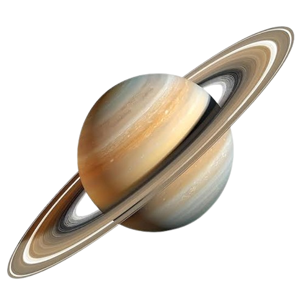

🪐
Os famosos anéis
Seus anéis são formados principalmente por pedaços de gelo, rocha e poeira que orbitam o planeta.
Zeus chegou a Saturno, um planeta cercado por enormes anéis de gelo e poeira. Uma nova pista está escondida em uma estação espacial abandonada.
INICIAR MISSÃO
Seus anéis são formados principalmente por pedaços de gelo, rocha e poeira que orbitam o planeta.
Saturno possui muitas luas. Uma das mais conhecidas é Titã, que possui lagos e mares de metano e etano líquidos.
No polo norte de Saturno existe uma formação atmosférica com formato de hexágono.
Depois de recuperar a transmissão em Júpiter, Zeus recebeu novas coordenadas que apontavam para Saturno.
Ao chegar a uma estação espacial abandonada, encontrou duas imagens dos anéis do planeta. Porém, uma delas foi alterada.
Seu colega deixou uma mensagem: existem sete diferenças entre as imagens. Encontrá-las será a única maneira de desbloquear a próxima pista.
Compare as duas imagens e encontre todos os detalhes que foram modificados.
Clique nos números ou nos pontos da imagem para marcar as diferenças.
As sete diferenças foram identificadas. A estação liberou uma nova transmissão para Zeus.